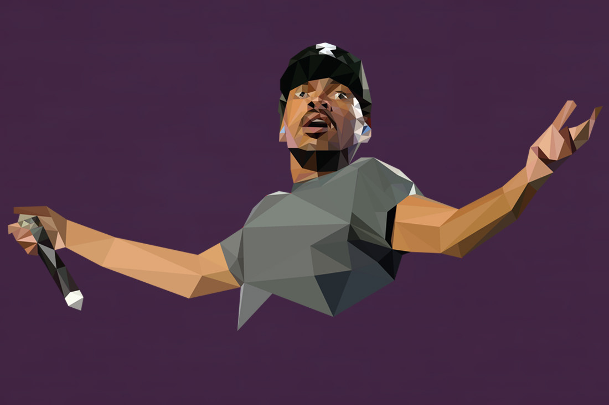

These low-poly portraits are an ongoing series where I take some of my favorite artists and characters and represent them using only triangles. It has been a challenging exercise where I have learned so much about the importance of color, depth, and definition.
